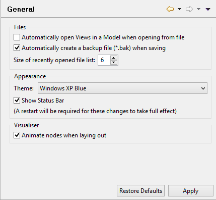

General Preferences
Automatically open Views in a Model when opening from file
When opening a Model from a file, choose whether to automatically open all the Views in the model.
Automatically create a backup file (*.bak) when saving
If this is ticked, whenever an .archimate file is saved, a backup copy with file extension .bak will be created first.
Size of recently opened file list
Set the cached sized of the recently opened file list in the "File->Open Recent" menu. Can be set from 3 - 15.
Use curved tabs
When this is ticked, curved tabs are used in windows.
Animate nodes when laying out
When this is ticked, nodes in the Visualiser window are animated when laid out for the first time and when the "Layout" button is clicked.